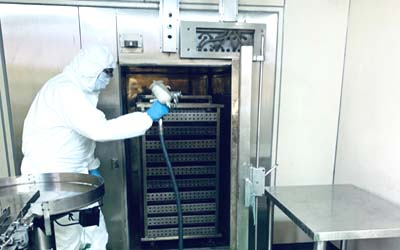
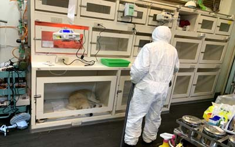
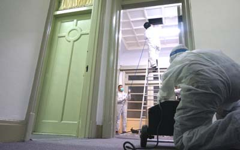

消毒/滅菌/抗菌之方法與原理
| 消毒，其主要原理為使微生物之:真菌、細菌、病毒、芽孢)有機体破壞，如蛋白質、蛋白酶變性(如凝固與溶解脂質)，損傷細胞膜氧化，抑制繁殖生長等，消毒方法最根本是將其源頭及增長環境控制，再予以消毒，其方法有物理、生物、化學等法，另外大部份臭味來源也是由於菌類與揮發性化學物質產生，故許多消毒劑亦有消(除)臭功能；須注意所用藥劑是否會產生污染。 |
| "消毒殺菌"（sanitize）指的是減少有害微生物至較安全的標準。消毒劑對任何適用的表面可達到消毒殺菌的效果，然而，當消毒劑使用在標籤上未述及的表面時，無法消毒之，例如美國環保署（EPA）尚未制定關於消毒毛毯的報告書，因此，專業的清潔人員並不是在消毒毛毯，不過是在毛毯上使用消毒劑而已，對消毒劑的一個重要理解，是要求除臭以及修復的技術員，在依照你的要求使用消毒劑時，能始終遵循標籤上的指示。你不能要求去消毒一個在消毒劑的使用指示上沒有載明的表面；正如你沒有消毒毛毯，你只是在毛毯上使用消毒劑而已。在工業上所使用的消毒劑，通常會含有戒介面活性劑（surfactant），以已幫助滲入紡織品。其中的一些尚含有酒精，以協助滲透及縮短乾燥時間。由於消毒劑的配方有著十分嚴格的規定，你通常會發現它們並不依賴香料的添加，部分的原因是消毒劑的主要在於除去微生物，太過強烈的香氣可能會導致技術人員錯誤的判斷，而沒有正確的噴灑所有的表面。 |

物理消毒法
| 1.熱力：乾熱如火燄，濕熱如蒸汽，高壓熱如高壓蒸汽爐，燻蒸消毒，烤箱等，多用於食物中，其中高壓濕熱最常用於器械消毒。 |
| 2.過濾：是以小於微生物體直徑之過濾網膜過濾，針對空氣與液體中之微生物，如高科技產業之無塵菌實驗室、空氣清淨機所用HEPA(高效能濾膜網)，水處理所用緩砂。 |
| 3.電磁波：如紅外線、紫外線、微波、超音波振動等。 |
| 4.幅射線：如X光、Y射線等之短波，將其DNA、RNA等破壞，但部分古細菌對此抵抗力很強。 |
| 5.真空：無物質狀態，為食物保鮮方法為主。 |
| 6.CO2：殺死部份細菌，或抑制部分菌種生長。 |
| 7.高張環境：添加食用糖、鹽以提高滲透壓，可用於保存食物。 |
| 8.負離子等：一般其消毒為次要功能，嚴格來說只能抑制細菌。 |
| 9.觸媒：如光觸媒使其微生物之有機体分解，觸媒本身不產生變化，透過反應紫外線光能以分解細菌。 |
| 10.電漿（等離子體）：保持電中性的電離物質，和氣體型態相似形狀和體積不固定，會依著容器而改變。 |
| 11.臭氧：又稱活氧，是一活潑氣體，具強烈氧化功能，在0.1ppm以上就具有殺菌效果，但也會損傷人體呼吸道健康，甚至引起氣喘，許多清淨機有其功能，但在有人的空間中是不可使用臭氧來消毒，因臭氧會損害人體肺部細胞。 |
| 12.紫外線：波長在280nm以下，其中以250-260nm最具代表，紫外線殺菌力與其照射能量、時間有關，2020年因新冠肺炎COVID-19原因，市面上有許多UV LED殺菌產品，號稱可殺新冠病毒99.9%，但未告訴您其實驗報告是空間在1cm以下，甚至時間在數小時後的結果。 |

生物及化學消毒法
| 生物法：如厭氧氨氧化菌為污水處理中重要細菌，能夠吃掉核污染和一些有毒物質之菌種，相當於病媒防治藥劑中之蘇力菌，昆蟲費洛蒙素，某些病毒對人類無害，但對於一些致病源細菌卻能夠阻礙或殺死，但皆因製造成本極昂貴且國內取得不易，目前不符市場需求，但未來發展潛力大。 |
| 化學法：利用化學之氧化能力，破壞細菌之原理最常見的有次氯酸鈉：俗稱之漂白水，含有刺鼻及腐蝕性，這是最常見的使用之消毒劑之一，其中燻蒸消毒為較有效之方法之一，又以溴化甲烷為主，但它對人體有劇毒，如非必要不使用此化學藥劑為佳。 |
| 化學法消毒劑大致可分無有機類和無機類兩大項，多數是液態為主。 |
| 最具代表性為次氯酸水(HCIO)及次氯酸鹽(Hyperchorite)，但要注意通風，因會產生毒氣。 |